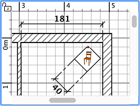

Pour dessiner des cotes, vous devez tout d'abord choisir Plan
> Créer les cotes ou sélectionner l'outil Créer les cotes.
 Outil
Créer les cotes Outil
Créer les cotes
Vous pouvez créer une nouvelle cote de l'une des
façons suivantes:
- Cliquez au point de départ de la cote, cliquez à son
point d'arrivée, puis cliquez une troisième fois après avoir déplacé
le pointeur de la souris pour déterminer la taille des lignes
d'extension dessinées à chaque extrémité de la ligne de la cote.
- Déplacez le pointeur de la souris sur le bord d'un meuble,
le côté d'un mur ou d'une pièce que vous voulez
mesurer, double-cliquez pour accepter la cote temporaire dessinée
dans le plan, puis cliquez une troisième fois après
avoir choisi la taille de ses lignes d'extension.
- Appuyez sur la touche Ctrl (ou la touche alt / option sous macOS) puis
cliquez au point de départ de la cote pour afficher le panneau
de création d'une cote en élévation qui mesure la hauteur
d'un objet quand elle est visualisée dans la vue 3D.
Quand vous dessinez une cote dans le plan, la nouvelle cote n'aura pas
de ligne d'extension si vous ne bougez pas la souris entre le second
et le troisième clic.
Au moment de choisir le point d'arrivée d'une nouvelle cote,
chaque mouvement de la souris met à jour dans le plan sa taille
et la longueur qui y est affichée.
 |
 |
Création d'une cote
sans lignes d'extension |
Création d'une cote
avec lignes d'extension |
Pour terminer le dessin des cotes, choisissez Plan > Sélectionner
ou sélectionnez l'outil Sélectionner.
 Outil
Sélectionner Outil
Sélectionner
|